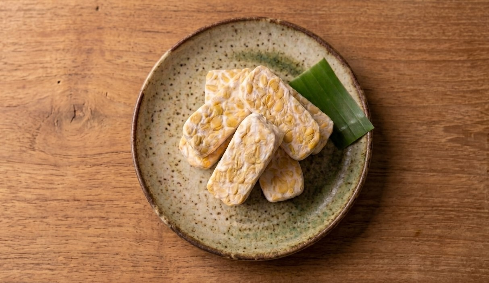
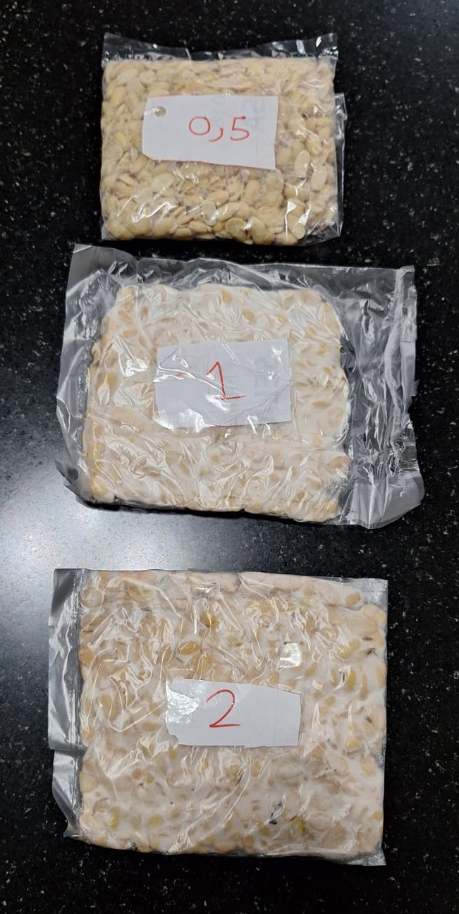

Selamat datang kepada website saya, di website berisi penelitian saya tentang proses fermentasi tempe saya. Tempe adalah makanan tradisional khas Indonesia yang mengandung berbagai nutrien. Tempe populer dengan masyarakat Indonesia karena harganya murah, rasa yang enak, dan kandungan gizi tinggi.
Learn More
Penelitian ini meneliti pengaruh kadar ragi (Rhizopus oligosporus) terhadap keberhasilan fermentasi tempe dengan tiga percobaan yaitu tempe dengan 0,5 sdm kadar ragi, tempe dengan 1 sdm kadar ragi, dan tempe dengan 2 sdm kadar ragi yang difermentasi. Hasil menunjukkan bahwa kadar ragi 0,5 sdm gagal, karena tidak terbentuk miselium. Sementara itu, kadar ragi 1 sdm dan 2 sdm keduanya berhasil menghasilkan tempe dengan miselium putih padat yang merata, dengan perbedaan bahwa perlakuan 2 sdm menghasilkan miselium lebih tebal.
Ini adalah cara membuat tempe:
1. Kacang kedelai dicuci dengan air hangat
2. Kacang kedelai direbus untuk 1 - 2 jam agar matang
3. Kacang kedelai direndam untuk 2 - 4 jam
4. Kacang kedelai dicuci lagi sampai tidak ada kulit
5. Kacang kedelai dikukus untuk 30 menit
6. Setelah matang, kacang kedelai ditempatkan di baki agar dingin
7. Jika sudah dingin, kacang kedelai diberi ragi dan diaduk sampai rata
8. Kacang kedelai dibungkus menggunakan plastik
9. Kacang kedelai dibungkus lagi dengan kain agar hangat
10. Tunggu 1 - 2 malam
11. Kacang kedelai menjadi tempe
